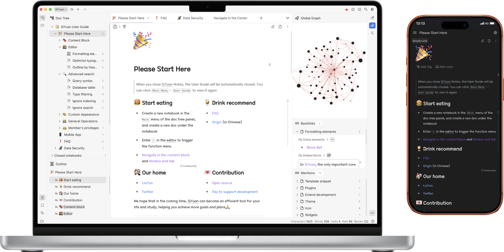
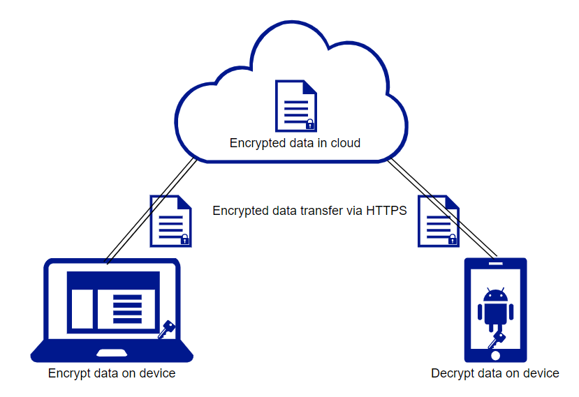
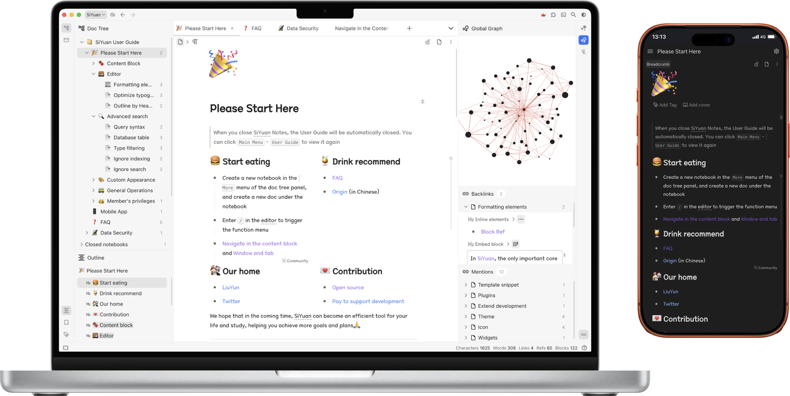
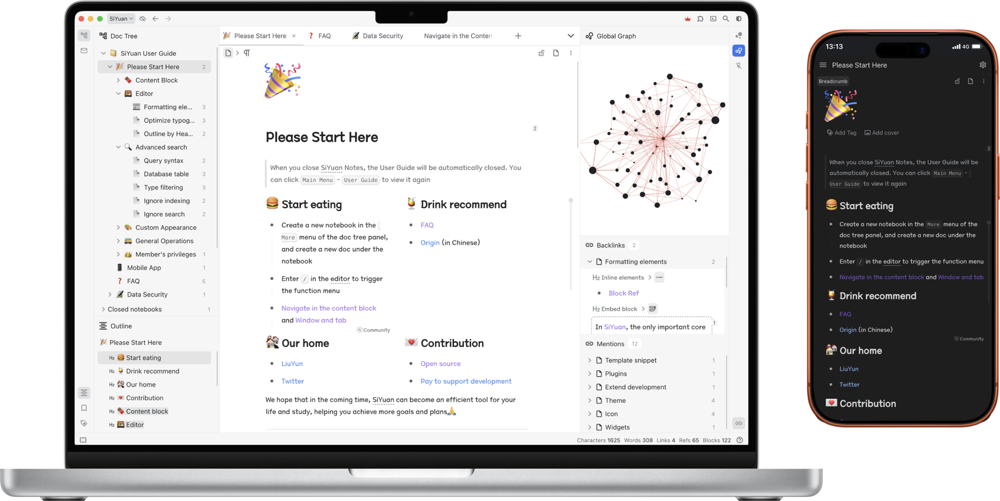

思源笔记
下载
定价
路线图
社区
English
所见所得
双链块引
加密同步
本地优先
思源笔记是一款本地优先的个人知识管理系统，支持完全离线使用，同时也支持端到端加密同步。
融合块、大纲和双向链接，构建你永恒的数字花园。
要尝试一下吗？

块式编辑
隐私安全
双链块引
列表大纲
数据同步
下载
Block 编辑模式
在思源中，唯一重要的核心概念是内容块。
通过排版格式即可形成内容块，这样我们就能在块级粒度上对思绪和知识进行整理，同时也能方便长文阅读和输出。
元素
内置 20+ 种类型的块元素和 10+ 种行级元素。
丰富的元素满足常用排版需要，更多特性化的需求可通过挂件块进行扩展。
聚焦
进入到块中聚焦，让我们更专注于当前块的内容。
所有块都支持聚焦，通过面包屑导航在上下文中轻松切换。
百万字
超大文档编辑亦可行云流水。
通过动态加载技术，在配置普通的电脑上也能流畅编辑百万字级别的大文档。
隐私安全
加密上云，隐私无忧
隐私政策
数据完全存储在用户自己掌控的设备上。
即使没有网络、即使云端服务宕机，依然可以在本地不受限制使用。
无离线，不笔记。
隐私安全靠的不是承诺。
多设备数据同步基于端到端加密技术实现，云端数据即使泄漏也几乎不可能被他人知晓内容。
个人隐私、知识财富不容他人觊觎。

双链块引
块级双向链接
文档页面也是块，降低心智负担。
所有内容都以块为基础存在，文档页面也不例外。块之间可以相互转换，拆分、重组和移动都不影响已有链接。
反向链接体现双链价值。
通过反向链接的提及发现潜在的知识关联，将提及转换为链接来固化关联结构。反链面板支持过滤搜索，让知识的连接更简单和高效。
探索链接关系图。
通过全局关系图鸟瞰知识结构分布，通过块级聚焦关系图专注知识链接路径。可视化知识的增长，闲暇之余观赏减压，赏心悦目。
列表大纲
梳理要点，逻辑分层
此大纲非彼大纲。
列表大纲多用于快速组织具有逻辑层次的知识，简单、高效且直观。
折叠
折叠是列表大纲最核心的操作之一，通过折叠隐藏细节、提纲挈领。在思源里，标题块也有着同样强大的折叠，文档大纲和列表大纲优势互补。
列表大纲下也可以拥有丰富的排版。
每条大纲条目下都能进行文档式记录，让文档与大纲充分融合，将知识的结构化进行到底。
多设备数据同步
保持数据的完整和一致
端到端加密同步。
通过端到端加密技术确保隐私安全，通过增量同步技术节省流量，提升数据同步效率。
支持 Android 移动端。
不仅仅是一个 APP，它还能作为移动服务器端使用，只要电脑和手机在一个局域网里就能通过电脑浏览器直接使用手机上的思源。
支持 Docker 部署。
通过 Docker 镜像将思源部署在服务器上来搭建自己的云端笔记，通过授权码控制访问权限，方便多人协作。


 
